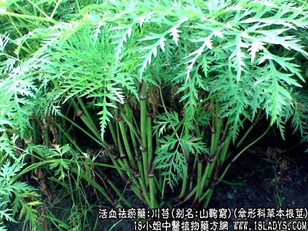
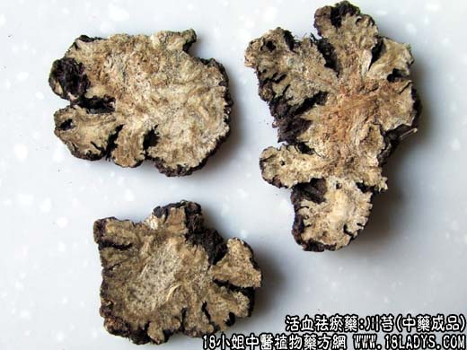

【中药概述】
川芎，别名：山鞠穷、芎、香果、胡、马衔芎、雀脑芎、京芎、贯芎、抚芎、台芎、西芎，为伞形科草本植物川芎的根茎。辛，温。归肝、胆、心包经。
1．活血行气：用于血瘀气滞的月经不调如月经后期限、痛经、经闭，有活血祛瘀、行气止痛的作用，故前人称“血中气药”。常与当归相须为用，以增强活血、行瘀、止痛之效，如<血府逐瘀汤>。
2．祛风止痛：用于感受风邪（感冒）引起的头痛、身痛及风湿痹痛等，如（<和剂局方>川芎茶调散）、（羌活胜湿汤）。
【药物形态】
本品为不规则结节状拳形团块，直径2～7cm。表面黄褐色，粗糙皱缩，有多数平行隆起的轮节，顶端有凹陷的类圆形茎痕，下侧及轮节上有多数小瘤状根痕。质坚实，不易折断，断面黄自色或灰黄色，散有黄棕色的油室，形成层环呈波状。气浓香，味苦、辛，稍有麻舌感，微回甜。
【药效鉴别】 本品为重要的活血止痛药。“走而不守”。活血而兼能行气开郁，为“血中气药”。“能通周身血脉”，“上行头目，下调经水，中开郁结”。活血止痛而能祛散外风，尤长于止头痛。川芎炒去油，生用痹痛攻。
【临证应用】
1.偏头痛：用川芎，白芷，炙远志各50g、冰片7g，共研末，用纱布包少许药末塞鼻，右侧头痛塞左鼻，左侧头痛塞右鼻。
【应用与配伍】
1．用于血瘀气滞的痛证。本品辛散温通，既能活血，又能行气，为“血中气药”，能“下调经水，中开郁结”。治妇女月经不调、经闭、痛经、产后瘀滞腹痛等。为妇科活血调经之要药，常配当归、桃仁、香附等同用。若血瘀经闭、痛经，配赤芍、桃仁等，如血府逐瘀汤；若寒凝血瘀者，配桂心、当归等，如《妇人良方》温经汤；若产后恶露不行，瘀滞腹痛，配当归、桃仁等，如生化汤。治肝郁气滞，胁肋疼痛者，常配柴胡、白芍、香附等，如柴胡疏肝饮；若心脉瘀阻，胸痹心痛者，常配丹参、桂枝、檀香等。近代以川芎及川芎为主的复方治冠心病心绞痛，有较好疗效。此外，伤科之跌扑损伤，外科之疮疡痈肿，亦可用之。治跌扑损伤，瘀血肿痛，常配三七、乳香、没药等同用，以活血消肿止痛；治痈疡脓己成而正虚难溃者，配黄芪、当归、皂角刺，以托毒透脓，如《外科正宗》透脓散。
2．用于头痛，风湿痹痛。本品丰温升散，能“上行头目”，祛风止痛。治头痛，无论风寒、风热、风湿、血脘、血瘀，均可随证配伍用之。前人有“头痛不离川芎”之说。治风湿痹证，肢体疼痛麻木，本品能“旁通络脉”祛风活血止痛。常配独活、桂枝、防风等祛风湿通络药同用。近代临床还以川芎注射液静滴，治急性缺血性脑血管病；以川芎嚎静滴治脑外伤综合症；以川芎配荜茇制成颅痛中治三叉神经痛及血管性头痛、坐骨神经痛、末梢神经炎等病症。
【药理作用】
1．对心脑血管系统的影响：
（1）对心脏的作用川芎提取物川芎嗪对离体豚鼠心脏有剂量依赖性抑制作用，但对心率影响不大。在缺氧前和缺氧时，川芎嗪对离体豚鼠心脏的作用是使心肌收缩性减弱、舒张功能下降、心率减慢。对整体动物川芎嗪有强心作用。
（2）对血管及血压的作用川芎嗪以不同的给药途径（静注、静滴或十二指肠给药）对多种动物（猫、兔和大鼠）给予不同的剂量均可产生不同程度的降压作用。
（3）对冠脉流量的影响川芎及川芎嗪对离休大鼠或豚鼠心脏均具有显著的增加冠脉流量作用。
（4）对心肌缺血及再灌注损伤的作用川芎嗪腹腔注射和川芎哚灌胃，均可延长小鼠在低压缺氧环境中的存活时间，并可对抗垂体后叶素所引起的家兔急性心肌缺血缺氧。
（5）对脑循环及脑缺血的影响川芎嗪4mg／Kg静注可扩张大脑血管，降低血管阻力，显著增加脑血流量。川芎可对抗实验性动脉粥样硬化免颈动脉平均血流量、平均血流速度下降和脑血管外周阻力升高等脑血管血液动力学参数的病变，对脑血管功能具有保护作用。
（6）对微循环的影响川芎和川芎嗪可解除去甲肾上腺素引起的金黄地鼠颊囊微动、静脉及毛细血管的痉挛，使减慢的血流速度加快，减少的血流量增多。川芎对肾上腺素引起的微动脉血流停止或减慢，管径的收缩等微循环障碍有显著的推迟发生作用，且对微动脉有扩张作用。
2．对血液系统的影响：川芎和川芎嚎在体外对由ADP、胶原和凝血酶诱导的家兔和血小板聚集有显著抑制作用，并可使已聚集的血小板迅速解聚。同时也能抑制血小板丙二醛的生成，对外源性花生四烯酸诱导的血小板聚集则无抑制作用。
3．对泌尿系统的作用：川芎唪可明显增加免肾血流量，其作用与药物剂量呈依赖关系，并有显著利尿作用。
4．对免疫系统的影响：川芎嚓能增强小鼠单核巨噬细胞的吞噬功能，提高大鼠淋巴细胞转化率和酸性α-醋酸萘酯酶（ANAE）检测的阳性百分率，也能促进小鼠绵羊红细胞（SRBC）抗体的形成。川芎能提高正常小鼠和淋巴细胞血清（ALS）所致细胞免疫功能低下小鼠的T淋巴细胞转化功能，且可将ALS所致小鼠异常升高的抑制性T细胞（Ts）功能调至正常水平，同时也可提高ALS所致小鼠白介素－3（IL～3）低下的活性。
5．对呼吸系统的作用：川芎唪对白三烯C4、D4、组胺、前列腺素F2α等所致豚鼠离体气管条收缩作用均有一定的抑制作用，为非竞争性拮抗剂，但不能对抗乙酰胆碱所致的气管收缩作用。川芎唪在体外对弹性蛋白酶有明显抑制作用，对豚鼠弹性蛋白酶肺气肿模型有防治作用。
6．对胰腺炎的防治作用：应用牛磺胆酸钠诱发大鼠急性出血坏死性胰腺炎（AHNP）后，川芎唪能增加胰腺相对血流量和灌注量，减轻胰腺病理形态损伤，稳定TxA2／PGI2于正常水平，降低血清过氧化脂质含量，抑制弹性蛋白酶，提高动物存活率，有效地防治胰腺炎。
7．抗肿瘤及抗放射作用：川芎嗪在每日20mg／kg剂量下，给药18日，能显著抑制B16－F10黑素瘤的人工肺转移。
8．其他作用：川芎的甲醇和己烷提取物能改善或部分改善东茛菪碳造成的记忆获得障碍，但对亚硝酸钠造成的记忆巩固障碍和40％乙醇造成的记忆再现障碍无明显作用。
【化学成分】 含生物碱、阿魏酸等酚性物质，还有、川芎酚、双藁本内酯，川芎嗪，盐酸三甲胺、盐酸胆碱等。 此外，川芎根茎尚含中性油，其成分为十五、十六、十七、十八烷酸乙酯，异十七、异十八烷酸乙酯和异十七烷酸甲酯。
【用量用法】
3——10g，水煎服。或研末服。
1.《本草经集注》：“恶黄连。”
2.《本草衍义》：“若单服既久，则走散真气。”
3.《本草蒙筌》：“恶黄芪、山茱、狼毒。畏硝石、滑石、黄连。反藜芦。”
4.《本草经疏》：“芎蒡性阳味辛，凡病人上盛下虚，虚火炎上，呕吐咳嗽，自汗，易汗，盗汗，咽干口燥，发热作渴，烦躁，法并忌之。”
5.《药品化义》：“凡禁用者，如心虚血少，惊悸怔仲，肺经气弱，有汗骨蒸，恐此辛温香散故也。如火气升上，吐衄，咳嗽，热据痰喘，中满肿胀，恐此引气上腾故也。”
6.《本草从新》：“气升痰喘不宜用。”
7.《得配本草》：“火剧中满，脾虚食少，火郁头痛皆禁用。”
【使用注意】阴虚阳元之头痛忌；月经过多及出血性疾病亦不宜。过敏反应见皮肤瘙痒。 酒川芎：增强活血止痛作用，以活血通经力强，多用于气血瘀滞，妇女月经不调、经闭、痛经、难产、胞衣不下等症，常与当归、白芍、地黄等同用。